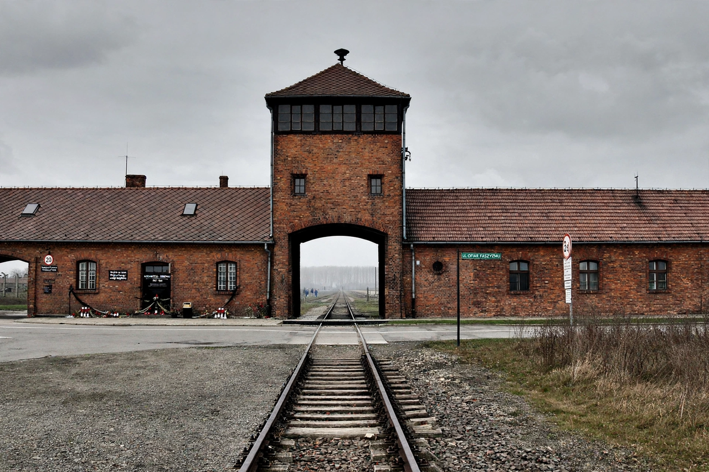

From Wikipedia, the free encyclopedia
| Extermination camps | |
|---|---|
 | |
| Period | 1941–1945 |
| Operated by | Nazi Germany (SS) |
| Main camps | Chełmno, Bełżec, Sobibór, Treblinka, Auschwitz-Birkenau, Majdanek |
| Victims | Approx. 2.7 million Jews murdered in the six camps, plus Roma, Poles, Soviet POWs and others across the camp system |
Extermination camps (German: Vernichtungslager), also called death camps, were camps established by Nazi Germany during the Second World War for the systematic murder of millions of people, overwhelmingly Jews, as part of the Holocaust — the "Final Solution to the Jewish question". Unlike concentration camps, whose primary purpose was detention and forced labour, the extermination camps were designed for immediate killing, usually by poison gas.
The first, Chełmno, began killing operations in December 1941 using gas vans. In 1942, under Operation Reinhard, the SS built Bełżec, Sobibór and Treblinka in occupied Poland, where some 1.7 million Jews were murdered, most within months of arrival. Auschwitz-Birkenau and Majdanek combined concentration- and extermination-camp functions; Auschwitz alone murdered about 1.1 million people, the great majority Jews, along with Poles, Roma, Soviet prisoners of war and others. Killing was done mainly with Zyklon B (at Auschwitz and Majdanek) or engine-exhaust carbon monoxide (at the Reinhard camps and Chełmno).
Prisoner revolts broke out at Treblinka (August 1943), Sobibór (October 1943) and in the Auschwitz Sonderkommando (October 1944). The Reinhard camps were dismantled and planted over in 1943 to conceal the crimes. Majdanek was liberated by the Red Army in July 1944 and Auschwitz on 27 January 1945 — a date now marked as International Holocaust Remembrance Day. The camp sites are preserved as memorials and museums, and Auschwitz-Birkenau is a UNESCO World Heritage Site.
See also: Auschwitz concentration camp · The Holocaust · Romani people